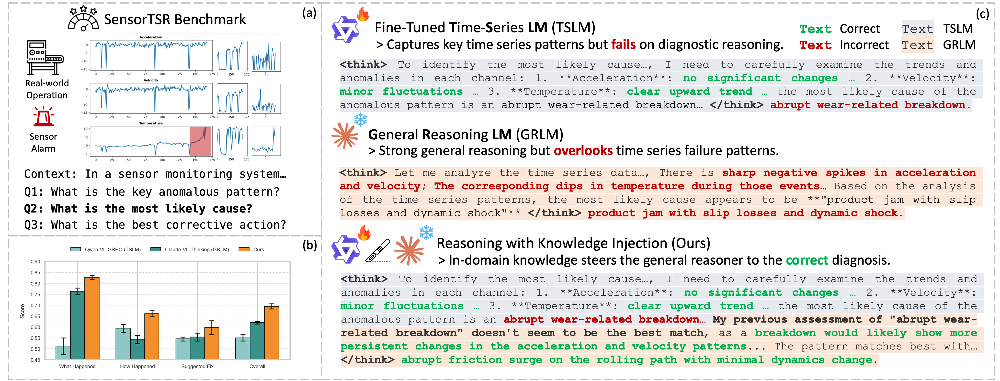
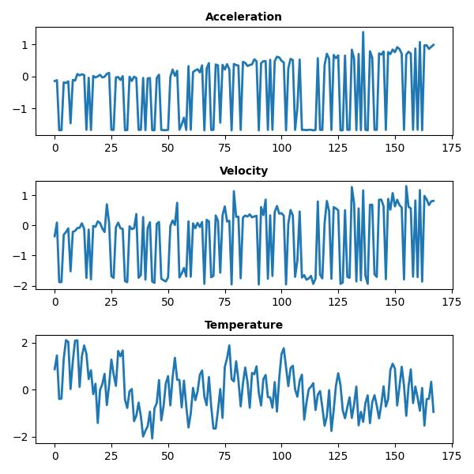
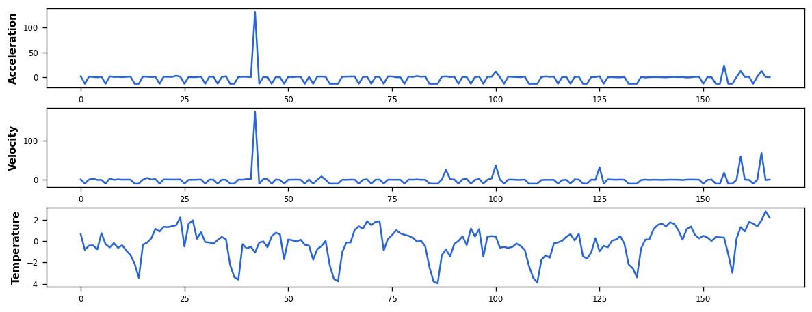
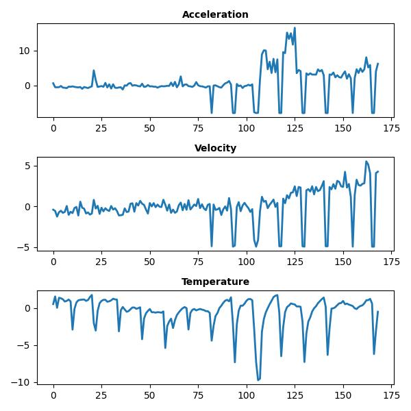
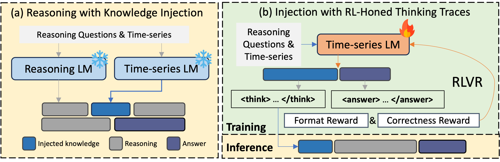
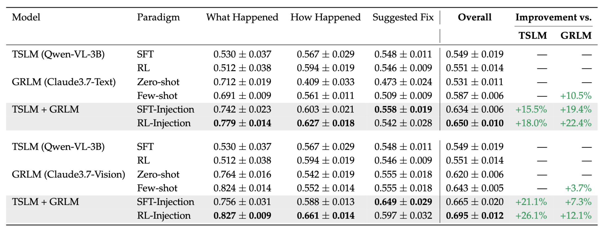

Abstract
Time-series diagnostic reasoning is essential for many applications, yet existing solutions face a persistent gap: general reasoning large language models (GRLMs) possess strong reasoning skills but lack the domain-specific knowledge to understand complex time-series patterns. Conversely, fine-tuned time-series LLMs (TSLMs) understand these patterns but lack the capacity to generalize reasoning for more complicated questions. To bridge this gap, we propose a hybrid knowledge-injection framework that injects TSLM-generated insights directly into GRLM's reasoning trace, thereby achieving strong time-series reasoning with in-domain knowledge. As collecting data for knowledge injection fine-tuning is costly, we further leverage a reinforcement learning-based approach with verifiable rewards (RLVR) to elicit knowledge-rich traces without human supervision, then transfer such an in-domain thinking trace into GRLM for efficient knowledge injection. We further release SenTSR-Bench, a multivariate time-series-based diagnostic reasoning benchmark collected from real-world industrial operations. Across SenTSR-Bench and other public datasets, our method consistently surpasses TSLMs by 9.1%–26.1% and GRLMs by 7.9%–22.4%, delivering robust, context-aware time-series diagnostic insights.

Dataset: SenTSR-Bench
We release SenTSR-Bench, a diagnostic-reasoning benchmark built from real-world, de-identified multivariate sensor data collected in warehouse monitoring operations.
- 110 multivariate time series with 330 human-curated diagnostic questions
- Three multi-stage question types forming a diagnostic chain: What Happened → How Happened → Suggested Fix
- Each time series contains 3 sensor channels: Acceleration, Velocity, and Temperature
Sample Explorer
Sample 1 / 3

Sample 2 / 3

Sample 3 / 3

Method & Results
Our framework operates in two stages. A fine-tuned time-series specialist (TSLM) first analyzes the raw sensor signals and produces domain-grounded observations. These observations are then injected directly into the reasoning trace of a general-purpose reasoning LLM (GRLM), allowing the reasoner to interact with and reflect upon domain knowledge as it thinks, rather than receiving it as a separate prompt. To train the TSLM, we use reinforcement learning with verifiable rewards (RLVR), which elicits analysis-first thinking traces without requiring human-annotated reasoning chains.

Across SenTSR-Bench and public benchmarks, injection consistently surpasses both standalone TSLMs (by 9.1%–26.1%) and standalone GRLMs (by 7.9%–22.4%). The table below summarizes results across multiple model families and datasets, demonstrating that placing domain knowledge inside the reasoning process yields stronger diagnostic accuracy than either model alone.

Citation
@inproceedings{He2026SenTSRBench,
title = {SenTSR-Bench: Thinking with Injected Knowledge for Time-Series Reasoning},
author = {He, Zelin and Han, Boran and Zhang, Xiyuan and Zhang, Shuai and Lin, Haotian and Zhu, Qi and Fang, Haoyang and Maddix, Danielle C. and Ansari, Abdul Fatir and Chandrayan, Akash and Pradhan, Abhinav and Wang, Bernie and Reimherr, Matthew},
booktitle = {Proceedings of the International Conference on Artificial Intelligence and Statistics (AISTATS)},
year = {2026}
}